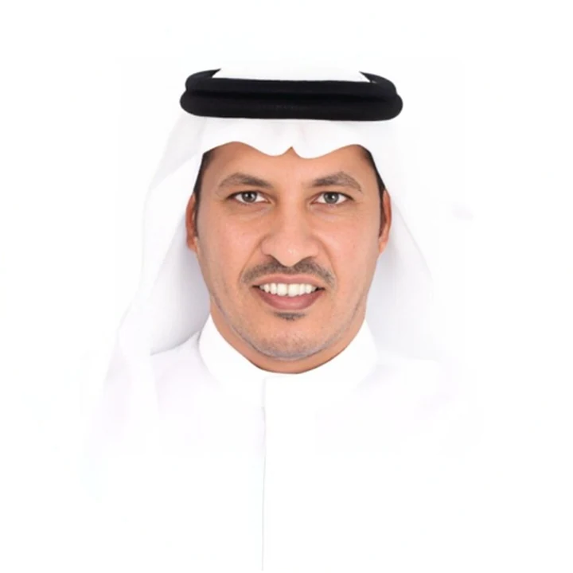

Results you can measure
For him, technology is worth what it changes: a faster service, a leaner operation, a decision grounded in evidence.
AI & Digital Transformation Leader
He turns AI and data in government into measurable results: faster services, leaner operations, and decisions backed by evidence.

It began in Makkah, studying computer engineering at Umm Al-Qura University while working in sales and finance. In government he started as a network engineer, connecting regional branches to headquarters in Riyadh. He was sent abroad twice, to the United States for his master's and to Australia for his Ph.D., and each time he came back to a larger responsibility. Today he leads an Artificial Intelligence department he built from the ground up.
The full storyThree areas of government work, from setting the strategy to running it.
From strategy, KPIs and a roadmap to a data warehouse and use cases that reach production.
Read moreThe largest paperless transformation of official correspondence, and e-services brought to beneficiaries on-site.
Read moreA network linking regional branches to headquarters, the primary data center, and the move to the government cloud.
Read moreIdeas that run through his work and what he writes about AI and digital government.
For him, technology is worth what it changes: a faster service, a leaner operation, a decision grounded in evidence.
Faced with bold predictions, he sorts them: what holds, what is possible but not as fast as claimed, and what no evidence supports.
As AI takes on routine work, he sees human value moving to creativity, decision-making, building systems and leadership.
He hopes his knowledge and work will benefit his country, Islam and Muslims, and the whole world.
Why does the internet sometimes slow down?
When a route between two networks breaks, the internet needs time to agree on a new one. That delay is what he studied for his Ph.D., and he proposed an SDN-based way to counter it.
Read about his researchClassic BGP · The news hops from router to router, and networks try alternatives before they settle.
With SDN · A controller sees the whole network and steers the gateways to the new path together.
2nd place across all sectors and regions.
From the Saudi Council of Engineers.
Among government leaders, for the government process reengineering program in Singapore.
RMIT University, with a 93.18% teaching score.
For running network operations with high reliability.
University of Bridgeport, GPA 3.67/4, and membership of Upsilon Pi Epsilon.
Dr. Hamad welcomes conversations with technology leaders, government entities and technology firms in the Kingdom.